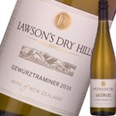

（白ワイン・ニュージーランド）ローソンズ・ドライヒルズ・ゲヴュルツトラミネール 2016 wine
全世界【15007本】の頂点に立った2480円の傑作白ワイン!!!英国の権威あるワイン専門誌[デキャンタ]で超難関・最高賞[トロフィー]獲得!!ニュージーランドのトップクラスの生産者が造るわずか2480円の白ワインが見事『世界No.1美味しいアロマティックな白ワイン!!』に輝いたんです!!そのコメントには『優れた品種の特徴と強靭なミネラルを兼ね備え、酔わせるようなエキゾチックな香りに花の香りが非常に豊かだ!!』と激賞を受けて【世界NO.1白ワイン】に選出!!それだけではありません!!2013年は5つ星★★★★★獲得!!2014年は【金賞受賞!!】2015年は『エアー・ニュージーランド・ワイン・アワード 2016』で【トロフィー獲得!!】そして最新2016年は≪2つの5つ星★★★★★≫＆≪2個のトロフィー≫獲得の超当たり年!!バラの花びら、ライチ、アプリコット、ムスクの高貴な香りに誰もがうっとり!!ワインのプロ中のプロが『世界No.1のアロマティック白ワイン!!』に選出した魅惑の白ワインを絶対にお見逃しなく!!!! 白ワイン/ニュージーランド/マールボロー